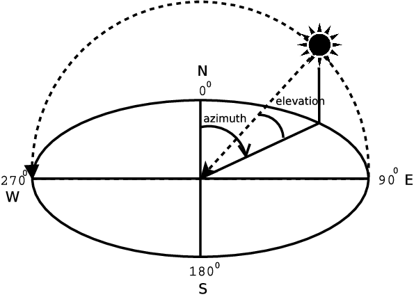

基本示例
Carla 教程 (Python API)
请使用 0.9.14 版本或者其他兼容 API 的 Carla 版本。
# 开始 Carla 模拟器
./CarlaUE4.sh -quality-level=epic -resx=800 -resy=600
# 如果您没有强大的 GPU
./CarlaUE4.sh -quality-level=low -resx=800 -resy=600
Gallery
示例 01 : 开始 (异步：车辆会有抖动感）

示例 02 : 同步

示例 03 : RGB 相机

示例 04 : 更多相机

示例 05 : Open3D 激光雷达

示例 06 : 交通管理器

示例 07 : 3D 边界框，还包括 2D边界框、服务端垂直视角 、使用 3D 顶点计算遮挡

示例 08 : 绘制路径点

示例 09 : 基本导航

示例 10 : 手动控制

示例 11 ：太阳高度的快速变化

[示例 12] ：反向AI控制
报错：{ProxyError}HTTPSConnectionPool(host='api.inverted.ai', port=443): Max retries exceeded with url: /v0/aws/m1 (Caused by ProxyError('Unable to connect to proxy', SSLError(SSLZeroReturnError(6, 'TLS/SSL connection has been closed (EOF) (_ssl.c:1135)'))))
pip install urllib3==1.25.11